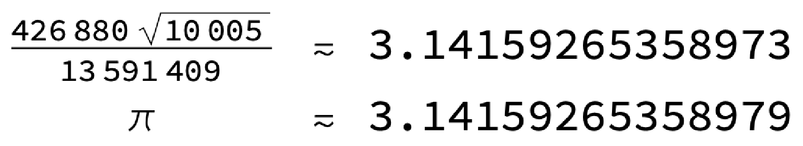
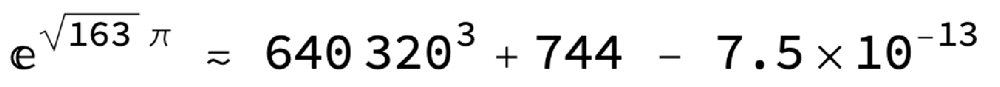

Algoritma şu:1
Algoritmanın sadece ilk terimi bile pi’yi çok yüksek hassasiyette bulmaya yetiyor:

Seri açılımında sonradan gelen terim öncekilere göre üstsel olarak daha küçük olduğu için de sadece 3 5 terim ile bile inanılmaz bir hassasiyet yakalanıyor. Aşağıdaki grafikten de anlayabileceğimiz gibi açılımdaki ilk 10 terimi kullanarak pi’nin yaklaşık ilk 300 rakamını elde edebiliyoruz:

Chudnovsky kardeşler2 sağolsun, 2020 yılı itibariyle bu algoritma ile pi’nin 50 trilyon basamağı hesaplanmış durumda.
Bu denklemin bu kadar etkili olmasının arkasında elbette çok daha derin bir sebep var; bu sebepe biz burada girmeyeceğiz ama anahtar kelime olabilecek en büyük Heegner sayısı olan 163.3 Bu çok özel sayıyla karşılaştığımız bi başka nokta da bir çember üzerindeki 9 nokta arasına çizilen doğru parçalarının daireyi böldükleri parça sayısı; ilginç bir şekilde, çember üzerindeki nokta sayısı ile bu noktalar arasında çizilen doğru parçalarının daireyi böldükleri parça sayısı arasında şöyle bir ilişki var: Nokta sayısı:1,2,3,4,5,6,7,8,9,10 Parça sayısı:1,2,4,8,16,31,57,99,163,256 Niçin böyle olduğu ile ilgili çok güzel bir anlatım için şu videoyu tavsiye ederim: https://youtu.be/K8P8uFahAgc.
163 sayısı ile ilgili son bir ilginç bilgi de şu: Heegner sayıları ile neredeyse bir tamsayıya eşit olan üstsel sayılar yazılabiliyor. İngilizce almost integer denilen bu sayıların en büyüğü de 163 ile oluşturuluyor:
